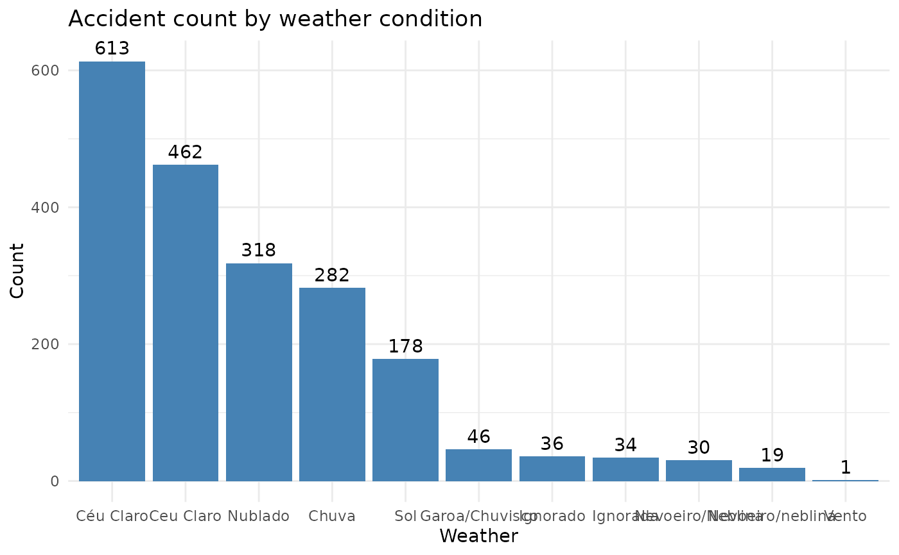

prf_amazonas - Traffic accident data from Amazonas recorded by Federal Highway Police (2012-2025)
prf_amazonas.RdTraffic accident data from Amazonas (2012-2025)
Format
`prf_amazonas' A data frame with 116 rows and 30 columns:
- id
Record ID
- date
Date of the record - yyyy-mm-dd
- days_of_week
Day of the week
- time
Hour of the record
- federative_unit
Federative unit (UF)
- br
Federal Highway
- km
Kilometer of BR
- municipality
Municipality
- accident_cause
Accident cause
- accident_type
Accident type
- accident_classification
Accident classification: victims, no victims, unharmed victims, fatal victims
- road_direction
Road direction
- weather
Weather conditions at the time of the accident
- track_type
Track type: Simples, Múltipla ou Dupla
- track_layout
Track layout
- land_use
Land use
- people
People involved in the accident
- deceased
Death toll
- minor_injuries
Number of victims with minor injuries
- serious_injuries
Number of victims with serious injuries
- unharmed
Number of unharmed victims
- ignored
Ignored
- harmed
Number of harmed victims
- latitude
Latitude
- longitude
Longitude
- regional
Superintendency of the Federal Highway Police of Brazil
- police_station
Police station where the report was filed
- operating_unit
Operating unit and police station
Examples
# \donttest{
# Accident count by weather condition
# Loading dplyr and ggplot
require(dplyr)
require(ggplot2)
require(forcats)
#> Loading required package: forcats
# Counting accidents by weather condition and ploting
prf_amazonas %>%
count(weather) %>%
mutate(
weather = fct_reorder(weather, -n)
) %>%
ggplot(aes(x = weather, y = n)) +
geom_bar(stat = "identity", fill = "steelblue") +
geom_text(aes(label = n), vjust = -0.5) +
theme_minimal() +
labs(
title = "Accident count by weather condition",
x = "Weather",
y = "Count"
)

# }